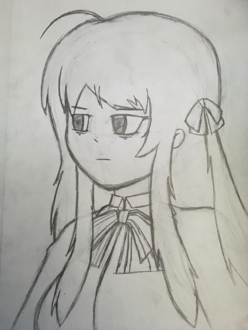

Image by Tony-Vespucchi
Source
Es difícil visualizar lo que has hecho hasta este punto de tu vida. Sabes que tus acciones son
importantes, pero no puede evitar cuestionar si tus intenciones son las correctas.
Estoy cansada, agotada, furiosa y llena de rabia, odio, rechazo, no quiero ver a nadie, como a la
vez no quiero que nadie me vea. Estas son palabras y sentimientos que reflejan mucho como suelo
sentirme a veces, debo comentar que actualmente al momento de escribir esto. Me siento muy aliviada,
con mucha paz y con ganas de poder brindar un poco más de mí a quién lo requiera, a quienes aprecio
mucho.
¿Qué ha cambiado? ¿Estás bien? Parece que necesitas un poco de dirección, a veces simplemente no
quiero saber nada, por que no se ni donde estoy. Cuestiono todas mis decisiones, a veces siento que
no doy lo correcto, o peor aún mis acciones no tienen una intención equilibrada con los resultados
que busco. Lo que cambia no es lo que pienso, no lo es… Creo que simplemente, no es fácil.
Miro lo que escribo, no me convence, cambio algunas palabras y otras simplemente las quito, sin
mucho pensar. ¿Cómo escribir esto si mi estado es casi el opuesto a la intención de lo quiero
transmitir? Creo que esa es una apropiada observación, mis acciones no siempre están en armonía con
los resultados y eso muchas veces me produce un malestar insostenible, quiero tener el control,
necesito tener el control. Es la única forma de saber que las cosas están bien, necesito verlo en
otras personas, debo dar de mí y ver que otros puedan mejorar con mi influencia. Realmente necesito
ayudar, quiero ayudar, necesito ayudar para ignorar la ayuda que necesito darme a mí misma.
Era mucho más fácil como se escribía esta entrada en mi cabeza, era ideal, una forma precisa de
sacar a veces esto, esto tanto cuesta y naturalmente no quiero que nadie lea. Ahora, es todo mucho
más difícil, por que me contengo, no me permito ser sincera y eso es un problema. Sin embargo, ya
estoy mejor.
Me avergüenza mucho debo mencionar, que escribir algo así sin mucho articular, pues temo como esta
entrada pueda terminar, quizás mas tiempo le debería dedicar, no temas True que se puede solucionar,
solo debes seguir intentándolo y no abandonar, cierra los ojos y escucha solo debes esperar, un poco
de paciencia debemos de continuar.
En todo este tiempo, he aprendido que es muy importante poder tenerte cerca. Tener una buena
relación contigo misma y estar más cercana, que alienada. Conocerte y no alejarte, saber que lo que
sientes y como actúas es importante, estaba cansada, cansada por haberme ignorado y dar más de lo
que podría dar. Es cierto que he perdido mucho que lo que quería decir, también en parte trato de no
decirlo todo.
Muchas son las cosas que me molestan, pero me molestan más las acciones de las personas que yo misma
no me perdonaría hacer. No soy correcta del todo, pero trato de ser mejor. Me siento perdida, pero
creo que tengo una dirección, quiero poder escuchar, entender, hablar y comunicar mucho más. Darme a
entender, poderme cuidar y cuidar a los demás. Obra con el ejemplo y se honesta todo el tiempo,
vienen las piedras, pero también la lluvia y luego un sol que no te quema. Debes estar triste y
permitirte llorar, no muestres una fortaleza inexistente y tampoco seas el soporte que no puedas
hacer, debes aceptar que no siempre tendrás los mejores resultados y muchas veces las cosas podrán
ir mal. No importa, si esto que te dices es demasiado obvio, muchas veces te lo debes de mencionar,
ahora levanta las manos y sal, recibe el clima, que ya estas un poco menos molesta, un poco más
calmada, casi sin odio o con muchas menos lagrimas aún sin derramar.